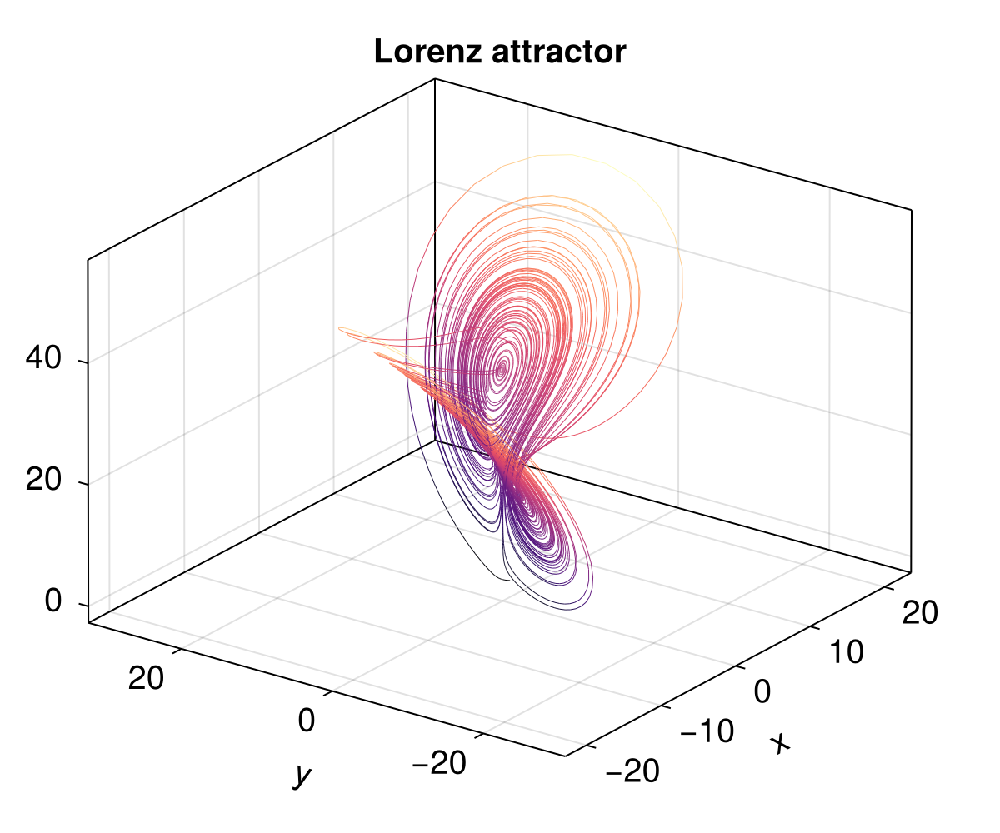

Model interface
Oceananigans models are concrete subtypes of AbstractModel that can be advanced by Simulation. This page documents the model interface: the handful of functions and data that a model must provide so that Simulation can initialize it, march it forward, and coordinate callbacks, diagnostics, and output writers.
The interface lives primarily inside src/Simulations/ and is intentionally minimal so that new models (or pedagogical toy models) can be written without depending on the full ocean model infrastructure.
The AbstractModel type
AbstractModel{TS, A} is parameterized by two type parameters:
TS: The time-stepper type. This enables dispatch on models with specific time-stepping schemes. For example,AbstractModel{<:QuasiAdamsBashforth2TimeStepper}matches any model using the quasi-Adams-Bashforth second-order scheme. Models without a conventional time-stepper (e.g., theLorenzModelexample below) can useNothingfor this parameter.A: The architecture type (e.g.,CPU,GPU). This allows dispatch based on the computational backend.
Models that don't fit the conventional time-stepper pattern can use AbstractModel{Nothing, Nothing} as their supertype.
Lifecycle overview
When run!(sim::Simulation) is called the following high-level sequence occurs:
initialize!(sim.model)prepares the model state, etc.) andupdate_state!(sim.model)computes any auxiliary tendencies.Time-stepping begins. For every time step, Simulation computes an aligned
Δt, gathers callbacks that should run inside the model (ModelCallsites), and callstime_step!(sim.model, Δt; callbacks=model_callbacks). Most models will also callupdate_state!at the end oftime_step!. This ensures that the auxiliary state (including halo regions, closure auxiliary fields, etc) is current with the prognostic state so that output and callbacks can execute correctly on a fully consistent model state.After
time_step!(model, Δt),Simulationexecutes its diagnostics, output writers, and callbacks scheduled on theTimeStepCallsite.
Because Simulation assumes this protocol, any custom AbstractModel should implement (or inherit sane fallbacks for) the items listed below.
Structure and extensions of an AbstractModel
Required properties
model.clock :: Clock: the source of truth fortime(model)anditeration(model). Simulation uses it for stop criteria and logging, and resets it viareset_clock!(model)whenreset!(sim)is called.
Required methods
eltype(model): return the floating-point type used by the model. Simulation uses this for time step conversion. The default fallback returnsFloat64. Models with agridproperty typically override this aseltype(model::MyModel) = eltype(model.grid).
Lifecycle hooks
update_state!(model, callbacks=[]; compute_tendencies=true): invoked by Simulation right afterinitialize!and inside most time steppers. This is where models fill halos, update boundary conditions, recompute auxiliary fields, and runCallbacks with anUpdateStateCallsite. PDE-based models typically finish by callingcompute_tendencies!(model, callbacks)so that anyTendencyCallsitecallbacks can modify tendencies before integration. Note thatcompute_tendencies!is not part of the required interface—it is simply a useful pattern for models that integrate differential equations.time_step!(model, Δt; callbacks=[]): advances the model clock and its prognostic variables by one step. Simulation hands in the tuple ofModelCallsiteCallbacks so the model can executeTendencyCallsite(before tendencies are applied) andUpdateStateCallsitecallbacks (after auxiliary updates). The method must calltick!(model.clock, Δt)(or equivalent) so thattime(model)anditeration(model)remain consistent.set!(model, kw...): not strictly required, but strongly recommended as an interface for users to modify the model's prognostic state.initialize!(model::AbstractModel): called exactly once perrun!before the first time step.
Optional integrations
While not required for Simulation itself, the following methods enable additional functionality:
architecture(model): return the computational architecture (e.g.,CPU(),GPU(), or aDistributedarchitecture). Simulation uses this to ensure that the time step is identical across all processes when running with aDistributedarchitecture. The default fallback returnsnothing, which skips distributed synchronization. Models with agridproperty typically override this asarchitecture(model::MyModel) = model.grid.architecture.timestepper(model): return the model's time-stepper object (ornothingif the model does not use a time-stepper). Simulation uses this to reset the time-stepper state whenreset!(sim)is called. The default fallback returnsnothing, so models without a time-stepper need not implement this method. Models with a time-stepper should implement this astimestepper(model::MyModel) = model.timestepper.fields(model)andprognostic_fields(model): returnNamedTuples of fields. These are not used by Simulation itself, but are conventions used elsewhere in the ecosystem.prognostic_fields(model)should return the fields that are time-stepped (used by NaN checkers and some diagnostics).fields(model)should return aNamedTuplethat includes both prognostic fields and other fields that users might want to access or output, such as pressure or diagnostic fields computed duringupdate_state!.default_nan_checker(model): customize theNaNCheckerthat Simulation adds by default.
Models that implement this interface
Several models across the CliMA ecosystem implement this interface:
Oceananigans.jl
NonhydrostaticModel: solves the incompressible Navier-Stokes equationsHydrostaticFreeSurfaceModel: solves the hydrostatic Boussinesq equations with a free surfaceShallowWaterModel: solves the shallow water equations
ClimaOcean.jl
OceanSeaIceModel: couples ocean, sea ice, and atmosphere components for Earth system modeling. The components themselves may beSimulationthat containAbstractModel, generating a nested structure.
ClimaSeaIce.jl
SeaIceModel: simulates sea ice thermodynamics and dynamics
Breeze.jl
AtmosphereModel: simulates atmospheric dynamics
Example: a zero-dimensional LorenzModel
The example below shows a deliberately tiny model that integrates the Lorenz system. The implementation demonstrates how little is required: store a clock, provide time_step! and update_state! implementations, and rely on fallbacks for the rest. Note that this model has no grid and no fields—just simple scalar state variables x, y, and z.
Implementing the interface
using Oceananigans
using Oceananigans.Models: AbstractModel
using Oceananigans.Simulations: Simulation, run!
using Oceananigans.TimeSteppers: Clock, tick!
using Oceananigans: TendencyCallsite, UpdateStateCallsite
import Oceananigans.TimeSteppers: update_state!, time_step!
import Oceananigans.Fields: set!
mutable struct LorenzModel{FT, P, S} <: AbstractModel{Nothing, Nothing}
clock :: Clock{FT}
parameters :: P
state :: S
end
function LorenzModel(FT = Float64; σ = 10, ρ = 28, β = 8/3)
clock = Clock{FT}(time = zero(FT))
parameters = (; σ=FT(σ), ρ=FT(ρ), β=FT(β))
state = (; x=zero(FT), y=zero(FT), z=zero(FT))
return LorenzModel(clock, parameters, state)
end
function set!(model::LorenzModel{FT}; kw...) where FT
x = :x ∈ keys(kw) ? FT(kw[:x]) : model.state.x
y = :y ∈ keys(kw) ? FT(kw[:y]) : model.state.y
z = :z ∈ keys(kw) ? FT(kw[:z]) : model.state.z
model.state = (; x, y, z)
return nothing
end
Base.eltype(::LorenzModel{FT}) where FT = FT
Base.summary(::LorenzModel) = "LorenzModel"
update_state!(model::LorenzModel, cb=nothing; compute_tendencies=true) = nothing
function time_step!(model::LorenzModel, Δt; callbacks = ())
model.clock.iteration == 0 && update_state!(model, callbacks; compute_tendencies = false)
(; σ, ρ, β) = model.parameters
(; x, y, z) = model.state
dx = σ * (y - x)
dy = x * (ρ - z) - y
dz = x * y - β * z
state = (x = x + Δt * dx,
y = y + Δt * dy,
z = z + Δt * dz)
model.state = state
tick!(model.clock, Δt)
update_state!(model, callbacks)
return nothing
endtime_step! (generic function with 7 methods)Using the model inside Simulation
We set up a Callback to record the trajectory at each time step:
lorenz = LorenzModel()
set!(lorenz, x=1)
simulation = Simulation(lorenz; Δt=0.01, stop_time=100, verbose=false)
trajectory = NTuple{3, Float64}[]
function record_trajectory!(sim)
push!(trajectory, values(sim.model.state))
end
add_callback!(simulation, record_trajectory!)
run!(simulation)Finally, we visualize the famous Lorenz attractor with a 3D line plot:
using CairoMakie
fig = Figure(size=(600, 500))
ax = Axis3(fig[1, 1]; xlabel="x", ylabel="y", zlabel="z",
title="Lorenz attractor", azimuth=1.2π)
xs = [p[1] for p in trajectory]
ys = [p[2] for p in trajectory]
zs = [p[3] for p in trajectory]
lines!(ax, xs, ys, zs; linewidth=0.5, color=zs, colormap=:magma)
fig
This minimal implementation inherits all other behavior from the generic AbstractModel fallbacks: Simulation can query time(sim.model), diagnostics can read sim.model.clock, and Callbacks scheduled on ModelCallsites execute because time_step! forwards the tuple that Simulation hands to it. Note that this model has no grid, no fields, and no time-stepper object—just the essentials. Larger models can follow the same recipe while adding grids, fields, closures, and time steppers as needed.
Example: a one-dimensional KuramotoSivashinskyModel
The Kuramoto-Sivashinsky equation is a fourth-order PDE known for exhibiting chaotic behavior:
\[\partial_t u + \partial_x^2 u + \partial_x^4 u + \frac{1}{2} \partial_x (u^2) = 0\]
This example demonstrates a model that uses Oceananigans grids and fields, showing how to leverage AbstractOperations for computing spatial derivatives.
Implementing the model
using Oceananigans.BoundaryConditions: fill_halo_regions!
mutable struct KuramotoSivashinskyModel{G, C, U, T} <: AbstractModel{Nothing, Nothing}
grid :: G
clock :: C
solution :: U
tendencies :: T # Gⁿ and G⁻ for RK3 time-stepping
end
function KuramotoSivashinskyModel(grid)
# Validate that the grid is 1D in x
size(grid, 2) == 1 && size(grid, 3) == 1 ||
throw(ArgumentError("KuramotoSivashinskyModel requires a 1D grid in x"))
clock = Clock{eltype(grid)}(time = zero(eltype(grid)))
solution = CenterField(grid)
tendencies = (Gⁿ = CenterField(grid), G⁻ = CenterField(grid))
return KuramotoSivashinskyModel(grid, clock, solution, tendencies)
end
function Base.summary(model::KuramotoSivashinskyModel)
grid_str = summary(model.grid)
return "KuramotoSivashinskyModel on $grid_str"
end
# Override architecture and eltype to use the grid
import Oceananigans.Architectures: architecture
architecture(model::KuramotoSivashinskyModel) = model.grid.architecture
Base.eltype(model::KuramotoSivashinskyModel) = eltype(model.grid)
"""Compute the right-hand side of the KS equation: -∂²u - ∂⁴u - ½∂ₓ(u²)"""
function compute_tendencies!(model::KuramotoSivashinskyModel)
u = model.solution
Gⁿ = model.tendencies.Gⁿ
∂²u = ∂x(∂x(u))
∂⁴u = ∂x(∂x(∂²u))
∂u² = @at (Center, Center, Center) ∂x(u^2) / 2
Gⁿ .= -∂²u .- ∂⁴u .- ∂u²
return nothing
end
function update_state!(model::KuramotoSivashinskyModel, callbacks = []; compute_tendencies=true)
fill_halo_regions!(model.solution)
[callback(model) for callback in callbacks if callback.callsite isa UpdateStateCallsite]
compute_tendencies && compute_tendencies!(model)
return nothing
end
function time_step!(model::KuramotoSivashinskyModel, Δt; callbacks = [])
# First stage: initialize
model.clock.iteration == 0 && update_state!(model, callbacks)
[callback(model) for callback in callbacks if callback.callsite isa TendencyCallsite]
# RK3 coefficients (Williamson's low-storage scheme)
FT = eltype(model)
γ¹, γ², γ³ = FT(8/15), FT(5/12), FT(3/4)
ζ², ζ³ = -FT(17/60), -FT(5/12)
u = parent(model.solution)
Gⁿ = parent(model.tendencies.Gⁿ)
G⁻ = parent(model.tendencies.G⁻)
# Stage 1: u = u + Δt * γ¹ * Gⁿ
u .+= Δt * γ¹ .* Gⁿ
G⁻ .= Gⁿ
tick!(model.clock, Δt * γ¹; stage=true)
update_state!(model, callbacks)
# Stage 2: u = u + Δt * (γ² * Gⁿ + ζ² * G⁻)
u .+= Δt * γ² .* Gⁿ .+ Δt * ζ² .* G⁻
G⁻ .= Gⁿ
tick!(model.clock, Δt * (γ² + ζ²); stage=true)
update_state!(model, callbacks)
# Stage 3: u = u + Δt * (γ³ * Gⁿ + ζ³ * G⁻)
u .+= Δt * γ³ .* Gⁿ .+ Δt * ζ³ .* G⁻
tick!(model.clock, Δt * (γ³ + ζ³)) # final tick increments iteration, resets stage
update_state!(model, callbacks)
return nothing
endtime_step! (generic function with 8 methods)Running a simulation with output
We initialize the model with a perturbed state and use a JLD2Writer to save the solution at regular intervals:
grid = RectilinearGrid(size=256, x=(0, 32π), topology=(Periodic, Flat, Flat), halo=4)
ks_model = KuramotoSivashinskyModel(grid)
# Initialize with a combination of sinusoidal modes
set!(ks_model.solution, x -> cos(x/16) * (1 + sin(x/16)))
simulation = Simulation(ks_model; Δt=0.002, stop_time=60)
simulation.output_writers[:solution] = JLD2Writer(ks_model, (; u=ks_model.solution),
filename = "ks_solution.jld2",
schedule = TimeInterval(1),
overwrite_existing = true,
including = [:grid])
run!(simulation)[ Info: Initializing simulation...
[ Info: ... simulation initialization complete (2.778 seconds)
[ Info: Executing initial time step...
[ Info: ... initial time step complete (7.308 seconds).
[ Info: Simulation is stopping after running for 18.407 seconds.
[ Info: Simulation time 1 minute equals or exceeds stop time 1 minute.Animating the chaotic dynamics
The Kuramoto-Sivashinsky equation produces complex spatiotemporal patterns. We use Observable to efficiently update the plot data during animation:
u_ts = FieldTimeSeries("ks_solution.jld2", "u")
times = u_ts.times
fig = Figure(size=(800, 400))
# Create Observables for reactive updates
n = Observable(1)
u_n = @lift u_ts[$n]
title = @lift "Kuramoto-Sivashinsky equation, t = $(round(times[$n], digits=1))"
ax = Axis(fig[1, 1]; xlabel="x", ylabel="u", title=title)
ylims!(ax, -4, 4)
# lines! works directly with Field
lines!(ax, u_n; linewidth=2, color=:royalblue)
record(fig, "ks_animation.mp4", eachindex(times); framerate=12) do nn
n[] = nn
endThis PDE-based model demonstrates how to use Oceananigans grids, fields, and operators within a custom AbstractModel. The key additions compared to the LorenzModel are:
- A
gridproperty with overriddenarchitectureandeltypemethods - A
tendenciesproperty containingGⁿandG⁻fields for multi-stage time-stepping - A separate
compute_tendencies!function called fromupdate_state! - Third-order Runge-Kutta (RK3) time-stepping using Williamson's low-storage scheme
- Using
fill_halo_regions!inupdate_state!to maintain periodic boundary conditions - Leveraging
AbstractOperations(∂x) for computing spatial derivatives via broadcasting